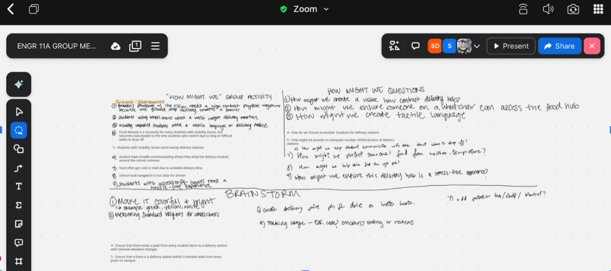
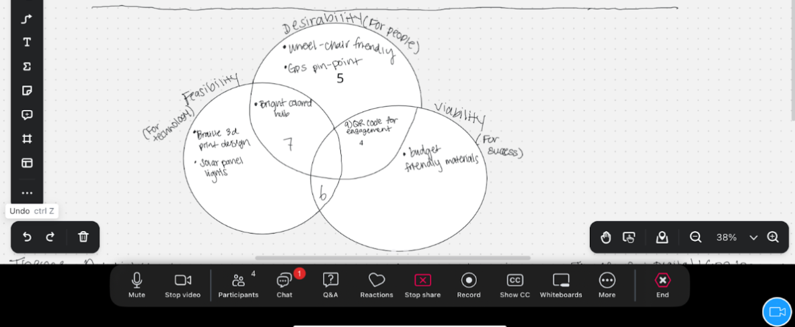
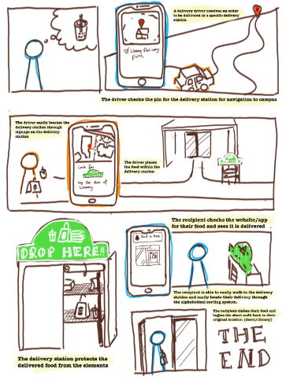

Moving forward, once we receive a response and develop our first prototype, we plan to refine our design and potentially incorporate the additional features we originally discussed, such as weather protection and insulation to keep food warm. We also identified that the ideal hub location would be under a shelter to protect against the elements and possibly near a camera to help reduce the risk of theft although theft is the least of our concerns currently.
Our target users include approximately 1,300 Brandeis students which is roughly 19% of Brandeis students with physical or sensory disabilities, with peak food delivery usage occurring between 6:00PM and 9:00PM at key campus locations which include the SCC, Farber Library, and residential quads.
Our design is grounded in the physics of how humans interact with the built environment, focusing on visibility, touch, reach, and automated lighting. For visibility (optics), we apply the concept of Light Reflectance Value (LRV) and follow ADA guidelines, specifically Section 703 from ada.gov, to achieve a 70% contrast ratio. This ensures the delivery hub stands out clearly against dark pavement, similar to how highway exit signs use high-contrast color schemes for long-distance readability.
For touch (haptics), we draw on open-source tactile signage and braille systems from makersmakingchange.com, incorporating textured surfaces inspired braille on the signage. These allow users with visual impairments to locate the hub through physical touch.
In terms of reach (ergonomics), we use anthropometric data from the IDeA Center for Inclusive Design (idea.ap.buffalo.edu) to position the shelf at 34 inches, keeping it within the safe reach zone of 15 to 48 inches used in accessible designs like ATMs and elevator controls.
Finally, for operation in low-light conditions (electronics), we incorporate a light-dependent resistor (LDR) system inspired by open-source designs from literoflight.org, which uses the photoelectric effect to automatically activate lighting at sunset, similar to solar garden path lights. Together, these principles ensure the hub is visible, touch-accessible, safely reachable, and functional at all times.
To effectively divide the work, our team established clear roles: Sipora serves as the project organizer and presenter, responsible for scheduling meetings(ideall on Sundays at 11pm until 12pm), setting agendas, and leading the final presentation; Joyce is the facilitator, ensuring all voices are heard during brainstorming and stepping in when needed; Sean acts as the quality specialist, reviewing work for clarity, consistency, and alignment with the rubric; and I take on the role of content architect, leading research, gathering sources, and drafting reports and slides.
Alongside these roles, we agreed on strong collaboration practices, including active listening, responding promptly on Google Chat within about an hour during active work periods, and giving advance notice if we cannot meet deadlines. We maintain accountability by logging daily contributions in a shared agenda and ensuring all members stay informed on overall project progress. Decisions are made through a majority vote to keep the team aligned, and we emphasize direct, respectful feedback to address issues early. Overall, our team follows a shared leadership model where each member contributes about six hours per week and plays an active role in both their responsibilities and the group’s collective success.
At the beginning of our brainstorming session, I initially wanted to incorporate a variety of features to enhance the user experience, such as a waterproof cover lined with reflective aluminum and highly visible signage. However, as a team, we realized the importance of narrowing our focus to the core problem: ensuring that food can be delivered effectively and accessibly to students with disabilities on campus. Rather than immediately adding extra features, we decided to first address the root issue by reaching out to Campus Services and Operations. In our email, we introduced our project—the Accessible Delivery Hub—and explained how inaccurate GPS pins and unclear building entrances often lead to deliveries being left on the ground, making them difficult or impossible for some students to access. We asked about the process for improving or standardizing campus map locations to better guide delivery drivers to accessible entrances.

We decided to move forward with a simple, clear design centered around a sign that reads “Deliver Here,” accompanied by a food icon and a downward-pointing arrow to make the drop-off location immediately obvious. The sign will use a green background with white lettering, as this high-contrast color scheme provides strong visibility in a variety of lighting conditions. To further improve usability, we will incorporate a light-dependent resistor (LDR) system that automatically turns on illumination at sunset, eliminating the need for manual operation and ensuring the hub remains visible at night. Additionally, the design includes a shelf positioned at 34 inches, allowing wheelchair users and others to comfortably and independently access their deliveries.

Moving forward, once we receive a response and develop our first prototype, we plan to refine our design and potentially incorporate the additional features we originally discussed, such as weather protection and insulation to keep food warm. We also identified that the ideal hub location would be under a shelter to protect against the elements and possibly near a camera to help reduce the risk of theft although theft is the least of our concerns currently.
write.
